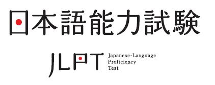

About
Full name: Nguyen Huy Toan
- Birthday: 15 May 1993
- Website: huytoan150593.github.io
- Phone: +81 704 280 6909
- City: Tokyo, Japan
- Age: 28
- Degree: Beginner
- Email: mrtoan150593@gmail.com
- Freelancer: Not Available
- Favorite: Sport, Rubik cube and Chess
Skills
html
Java
JavaScript
CSS
Linux
Bootstrap
resume
2012/09 - 2017/03: Study at Viet Nam Maritime University.
2017/10: 日本に来ました
2017/10 - 2019/03: JIN 東京日本語学校
2019/04 - 2020/03: 日本外国語専門学校 Japan Language Foreign College.
2020/04: 駿台電子情報＆ビジネス専門学校 Sundai Electric Information Business College.
portfolio
Web

Cafe-de-dekiru
先生デザインの通りに作りました。使ったのは HTML - CSS - JavaScript. Responsive complete.
先生デザインの通りに作りました。使ったのは HTML - CSS - JavaScript. Responsive complete.

Excelsior Cafe
エクセルシオールカフェで１年間アルバイトとして働きました。うちの店のWEBがおしゃれだなと～思ってるので、作ってみました。 モバイル Responsive まだやっていなくて、パソコンでしか見えないです。このサイトは Bootstrap 5 を使いました。全部完成していなくても、コードを書いてる間に色々なことが分かるようになりました。 エクセルシオールカフェにかんしゃしています。
エクセルシオールカフェで１年間アルバイトとして働きました。うちの店のWEBがおしゃれだなと～思ってるので、作ってみました。 モバイル Responsive まだやっていなくて、パソコンでしか見えないです。このサイトは Bootstrap 5 を使いました。全部完成していなくても、コードを書いてる間に色々なことが分かるようになりました。 エクセルシオールカフェにかんしゃしています。

Deep Sea
Bubble Effect Demo
YoutubeにいいデザインWEBSITEを探して、素晴らしいものをよく見まして。Youtubeに勉強したスキルを活用して Deep Sea というサイトを買いました。Hamburger Menu と Validation form には JavaScript で書いています。ホームページと SIGN UP Formだけ、Mobile Responsive もやっていなかったです。
Bubble Effect Demo
YoutubeにいいデザインWEBSITEを探して、素晴らしいものをよく見まして。Youtubeに勉強したスキルを活用して Deep Sea というサイトを買いました。Hamburger Menu と Validation form には JavaScript で書いています。ホームページと SIGN UP Formだけ、Mobile Responsive もやっていなかったです。

Animals
HTML - CSS skill 最も上達させて行けばいいな～と思いいます。こんな Website たくさんを作って、練習したました。
HTML - CSS skill 最も上達させて行けばいいな～と思いいます。こんな Website たくさんを作って、練習したました。
Licenses & certifications

JLPT N2 Japan language proficiency test
Date: 2017/03
Score: 123
Status: available
Toeic test ETS Global Group
Date: 2020/12
Score: 530
Status: Expire